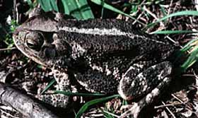

<body text="#000000" bgcolor="#FFFFFF" background="bg311.gif">

ЖАБА ПРИБРЕЖНАЯ (Bufo valliceps) живущая в Техасе и Луизиане, индивидуальные участки которой, ограничиваются расстоянием в 45 м от центра активности. Животные, перемещенные со своих мест жительства, возвращаются обратно, преодолевая при этом расстояния 36—220 м. Одна самка вернулась «домой» после того, как была перенесена на 300 м вниз по реке. 